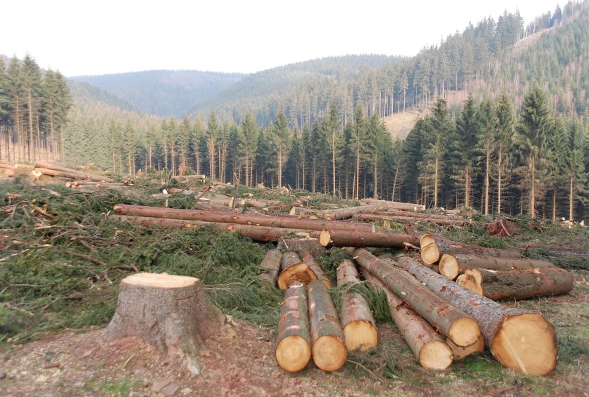

Deforestasi adalah proses berkurangnya tutupan hutan yang diakibatkan oleh berbagai faktor baik aktivitas manusia hingga faktor alam. Proses ini mengubah kawasan berhutan menjadi lahan non-hutan. Deforestasi biasanya terjadi karena adanya pembukaan lahan untuk pertanian, perkebunan, pemukiman, pertambangan, dan pembangunan infrastruktur. Deforestasi tidak hanya merusak lingkungan, tetapi juga membawa dampak nyata bagi kehidupan manusia. Hilangnya tutupan hutan memicu berbagai persoalan sosial, ekonomi, dan kesehatan yang dirasakan langsung oleh masyarakat. Di Indonesia, deforestasi, terutama di Kalimantan dan Papua, dipicu oleh alih fungsi lahan yang menyebabkan erosi, banjir, dan krisis iklim. Deforestasi adalah proses berkurangnya tutupan hutan yang diakibatkan oleh berbagai faktor baik aktivitas manusia hingga faktor alam. Proses ini mengubah kawasan berhutan menjadi lahan non-hutan. Deforestasi biasanya terjadi karena adanya pembukaan lahan untuk pertanian, perkebunan, pemukiman, pertambangan, dan pembangunan infrastruktur. Deforestasi tidak hanya merusak lingkungan, tetapi juga membawa dampak nyata bagi kehidupan manusia. Hilangnya tutupan hutan memicu berbagai persoalan sosial, ekonomi, dan kesehatan yang dirasakan langsung oleh masyarakat. Di Indonesia, deforestasi, terutama di Kalimantan dan Papua, dipicu oleh alih fungsi lahan yang menyebabkan erosi, banjir, dan krisis iklim. Sebelum deforestasi dilakukan, air hujan diserap oleh pohon atau tumbuhan untuk melancarkan siklus hidrologi. Jika deforestasi masih dilanjutkan, cadangan air tanah akan berkurang bahkan habis karena tidak mendapatkan resapan dan mengakibatkan banjir seperti yang dibicarakan di atas tadi. Air tanah yang biasanya disimpan dan diserap oleh akar akan tidak akan bisa meresap akibat deforestasi. Hal ini dapat membuat kekeringan di hutan dan kekurangan air bersih. Pohon dan tumbuhan yang digunakan untuk menyaring/memfilter air, sudah ditebang. Saat hutan ditebang, air langsung masuk ke dalam tanah tanpa proses tersebut. Hal ini menyebabkan air menjadi tercemar dan memiliki kualitas yang buruk. Padahal, air digunakan untuk mandi, mencuci, dan lain lain.
Contoh kasusnya yaitu di kawasan Danau Toba, ikon pariwisata dan sumber air utama di Sumatera Utara (Sumut), yang menghadapi krisis lingkungan serius. Musim kemarau panjang pada Mei 2025 menyebabkan penurunan permukaan air danau hingga 30 sentimeter, mengeringkan sejumlah mata air, dan memicu gagal panen di sektor pertanian. “Fenomena ini bukan sekadar efek El Niño. Penyebab utamanya adalah deforestasi masif dan pembakaran lahan yang merusak zona tangkapan air”, ujar Wilmar kepada Mistar. Menurutnya, konservasi Danau Toba bukan hanya soal pelestarian lingkungan, tetapi juga soal menyelamatkan sumber air, pangan, energi, dan kehidupan jutaan orang di Sumut.
Dampaknya jika tidak diurus akan menyebabkan krisis air serius dengan mengganggu siklus hidrologi, menurunkan muka air tanah, dan menyebabkan kekeringan saat kemarau serta banjir saat hujan. Hilangnya akar pohon dapat mengurangi penyerapan air (infiltrasi), menyebabkan tanah kehilangan kemampuan menahan air, meningkatkan erosi, dan menurunkan kualitas air.